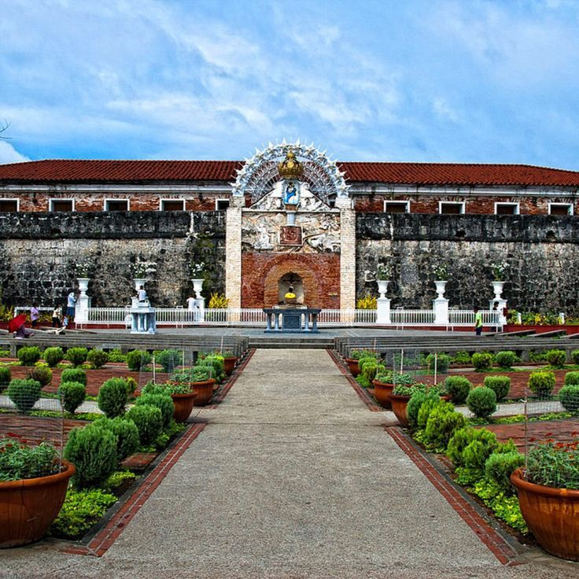
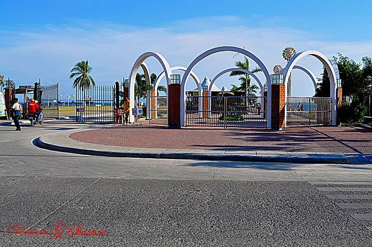
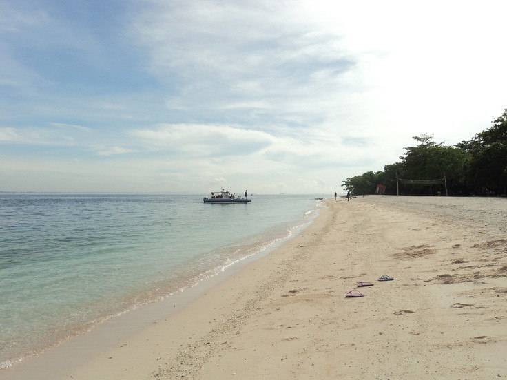
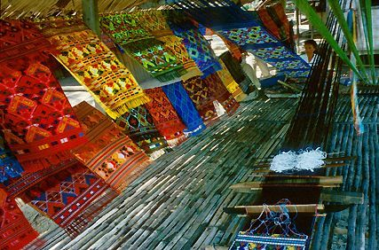
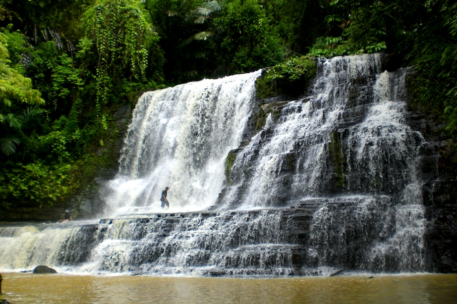

Explore the beauty and culture of this vibrant city and with the city's culinary scene having taken center stage, the city has become a must-visit destination for food enthusiasts everywhere. Zamboanga City's strategic location near the ocean is a gift that keeps on giving.
About Zamboanga City
Zamboanga City is known for its rich history, beautiful beaches, and diverse culture.
Zamboanga was chosen in 1569 as the site of the Spanish settlement and garrison on La Caldera (now part of Barangay Recodo). Spain granted the former Rajahnate of Sanmalan protectorate status against the Sulu Sultanate, its former overlord and the kingdom's name was hispanized into Zamboanga and made a city.
Favorite Spots
Here are some must-visit places in Zamboanga City:
Fort
Pilar : A historic military defense fortress built by the Spanish in the 17th century. It's now a cultural and historical landmark, featuring a shrine dedicated to Our Lady of the Pillar, a patroness of Zamboanga City.
Paseo del Mar : A popular waterfront promenade offering scenic views of the sea and nearby islands. It's a bustling hub with restaurants, cafes, and shops, perfect for leisurely strolls and enjoying sunsets.
Great Sta. Cruz Island: Famous for its unique pink sand beaches, Great Sta. Cruz Island is a natural wonder. Visitors can relax on the pink shores, snorkel in the crystal-clear waters, and explore the vibrant marine life.
Yakan Weaving Village : A cultural gem where visitors can witness traditional weaving techniques of the Yakan people, an indigenous group in Zamboanga City. The village showcases intricately woven fabrics and offers visitors the chance to purchase authentic Yakan textiles.
Merloquet Falls :
A picturesque waterfall nestled in the lush forests of Zamboanga City. Visitors can hike through scenic trails to reach the falls and swim in the refreshing natural pools beneath the cascading waters.